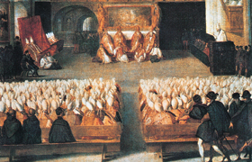

Lezione 12  Riforma e controriforma
Riforma e controriforma

Riforma: Nella storia del cristianesimo si parla di riforma a proposito di quei movimenti – già presenti nel Medioevo – che operarono per un rinnovamento, presentato prevalentemente come ritorno alle “origini”, della Chiesa; ma per lo più, e quasi per eccellenza, riforma o riforma religiosa è chiamato quel complesso movimento religioso, politico, culturale che produsse nel secolo XI la frattura della cristianità in diverse comunità, gruppi o sette. Si ricordi però che l’uso di indicare il protestantesimo in genere col termine Riforma o riforma protestante è nato nel Settecento, con l’attenuarsi delle disparità confessionali tra luteranesimo, calvinismo, anglicanesimo.
Controriforma: Nome con cui viene designata la vasta azione svolta, nel XVI secolo e in parte del XVII secolo, dalla Chiesa cattolica per realizzare quella “riforma nel capo e nelle membra” che, richiesta da tempo, era stata programma dei concili del secolo XV, e che il dilagare della Riforma protestante rese nel secolo XVI più urgente e necessaria che mai.
Il termine “Controriforma” non è certo felice perché restringe quell’azione alla sola opposizione alla Riforma; d’altra parte gli altri termini proposti, “restaurazione cattolica” o “riforma cattolica”, peccano all’opposto per non comprendere in sé la correlazione tra quella restaurazione e il protestantesimo. […] Il primo dei pontefici romani propriamente riformatori, Adriano VI, ebbe pur chiara la visione che un’azione radicale di riforma e correzione degli abusi, e di difesa dell’ortodossia era resa urgente proprio dal dilagare nei paesi germanici della Riforma di quel Lutero, contro il quale era stata da poco lanciata la condanna definitiva. […] Sul terreno dogmatico l’opera della Controriforma si concentra particolarmente in quella attività del Concilio di Trento (1545-1563) volta a fissare il dogma cattolico nei punti in cui il protestantesimo aveva rinnegato principi tradizionali, o interpretato in modo nuovo la Sacra Scrittura e i testi dei Padri della Chiesa.
Protestante: colui che appartiene a una delle confessioni religiose che costituiscono il protestantesimo.
Protestantesimo: nome assegnato al partito luterano dei principi tedeschi in seguito alla solenne protestatio, cioè rivendicazione di diritti, presentata alla Dieta di Spira (19 aprile 1959) che aveva confermato la condanna di Lutero emessa dalla Dieta di Worms: la “protesta” era firmata da sei principi tedeschi e quattordici città.
Nei paesi cattolici, e particolarmente in Italia, il termine protestantesimo serve a designare le confessioni che direttamente o indirettamente traggono origine dalla riforma religiosa del secolo XVI; del resto l’uso del termine protestantesimo per indicare, oltre la confessione luterana, quella calvinista e spesso anche l’anglicana, si è diffuso nel corso del Settecento e Ottocento.
Fonte: Dizionario enciclopedico italiano, Istituto dell’Enciclopedia Italiana fondata da Giovanni Treccani, Roma, 1958.